今度は図形を表示する キャンバス(canvas) ウィジェットを説明します。キャンバスは、矩形、直線、楕円などの図形のほかに、イメージ、文字列、任意のウィジェットを表示することができます。キャンバスウィジェットは、メソッド Canvas で生成することができます。次のプログラムを実行すると、空のウィンドウが表示されます。
リスト : キャンバスウィジェット use Tk; $top = MainWindow->new(); $canvas = $top->Canvas( width => 150, height => 150 ); $canvas->pack(); MainLoop();
これで図形を表示するキャンバスをウィンドウに配置したことになります。また、キャンバスとスクロールバーを組み合わせて、表示範囲を変更することもできます。
キャンバスを配置しただけでは、なにも図形は描かれていません。図形を生成するにはメソッド create を使います。
$canvas->create( 種別, 座標, オプション, ... );
指定できる種別には、次のものがあります。
| line | 直線（折れ線） |
| oval | 楕円 |
| arc | 円弧（楕円の円周の一部） |
| rectangle | 矩形 |
| polygon | 多角形 |
| image | イメージ |
| bitmap | ビットマップ |
| text | 文字列 |
| window | 任意のウィジェット |
それでは実際に図形を表示してみましょう。
$id = $canvas->create( 'oval', 10, 10, 140, 140 );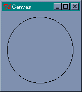 楕円の描画
ウィンドウに楕円が描画されました。楕円の場合、指定した矩形に内接するように描画されます。create メソッドは、図形を表す番号 (ID) を返します。これを使って図形を操作することができます。ウィジェットのメソッド cget や configure に対応するのが、itemcget と itemconfigure です。たとえば、楕円の中を赤色に塗りつぶしてみましょう。
$canvas->itemconfigure( $id, -fill => 'red' );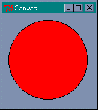 楕円の描画(塗りつぶし)
楕円の中が赤くなりましたね。よく使われるオプションには次のものがあります。
-fill のデフォルトは none です。これは透明を表してます。-fill で色を指定したあとでも、itemconfigure で none に再設定すれば透明に戻すことができます。
矩形も楕円と同じ指定方法です。-stipple には、Tk に標準で組み込まれているビットマップを指定するのが一般的です。よく使うビットマップが灰色の模様を表す gray12, gray25, gray50, gray75 です。それでは実際に描画してみましょう。
$canvas->create( 'rectangle', 10, 10, 140, 140, -fill => 'green', -stipple => 'gray25' );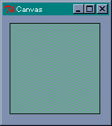 矩形の描画
次は直線です。2 点間だけではなく複数の点を指定すると、その間を直線で結びます。
では、直線を描画してみましょう。$id = $canvas->create( 'line', 10, 10, 140, 10, 10, 140, 140, 140 );
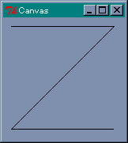 直線の描画
画面に Z 字型の線が描かれましたね。線の色を指定するオプションは、直線の場合は -outline ではなくて -fill で指定します。では緑色に変更してみましょう。
$canvas->itemconfigure( $id, -fill => 'green', -width => 2.0 );
-width で線を太くしています。
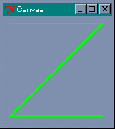 直線の色と太さを変更オプション -smooth を真 (1) に指定すると、滑らかな曲線を描画することができます。
$canvas->create( 'line', 10, 10, 140, 10, 10, 140, 140, 140, -smooth => 1, -fill => 'red' );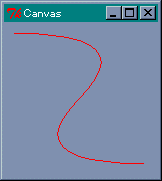 直線の描画(-smooth 指定)
このほかにも、矢印の設定や折り返しのときの形など、いろいろなオプションが用意されています。
次は多角形です。五角形を作ってみましょう。各頂点の座標を指定しますが、最初の点と最後の点が結ばれて閉じた図形となります。
$canvas->create( 'polygon', 75, 10, 140, 70, 110, 140, 40, 140, 10, 70 );
polygon では、デフォルトで -fill オプションが黒、-outline は描画されません。それから、line と同様に -smooth を真 (1) に指定すると、多角形の角を丸めます。実際に試してみてください。
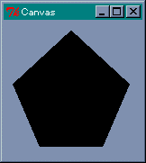 多角形の描画次は円弧です。楕円の円周の一部分を表示します。座標の指定は oval と同じですが、オプションで表示する範囲を指定します。
角度は度数でプラスが反時計回り、マイナスが時計回りとなります。また、oval と同じオプションが使えます。ただし、-style が arc の場合、-fill で色を指定しても表示されません。chord か pieslice に変更すると表示されます。
キャンバスはイメージとビットマップも表示することができます。
$canvas->image( x, y, オプション, ... ); $canvas->bitmap( x, y, オプション, ... );
x, y は表示する座標を表します。イメージのどの位置に対応させるかは、オプション -anchor で指定します。これは pack と同じ指定方法です。データとの対応は -image と -bitmap で指定します。たとえば、earthris.gif (Perl/Tk 配布パッケージ demos/images 内) を表示するには、次のようにプログラムします。
リスト : イメージの表示 use Tk; $top = MainWindow->new(); $canvas = $top->Canvas( width => 400, height => 300); $canvas->pack(); $image = $top->Photo( -file => 'earthris.gif' ); $canvas->create( 'image', 200, 150, -image => $image ); MainLoop();
これでキャンバスの中央にイメージが描画されます。
次は文字列です。当然ですがキャンバスに文字を描くことができます。
$canvas->('text', x, y, オプション, ... );
x, y は座標で、オプションには次のものが使えます。
それでは実際に試してみましょう。
$canvas->create( 'text', 75, 75, -text => 'hello, world!', -font => 'FixedSys 14' );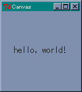 テキストの描画
これでウィンドウの中央に hello, world! が表示されます。
キャンバス中にほかのウィジェットを表示させる場合は window を使います。
たとえば、ラベルを表示させてみましょう。
$label = $top->Label( -text => 'hello, world!', -bg => 'green', -font => 'FixedSys 14' ); $canvas->create( 'window', 75, 75, -window => $label );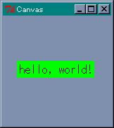 ラベルの描画
今度は背景色が緑の hello, world! が表示されました。
キャンバスで使用できる図形を一通り説明したところで、図形を操作するときによく使うメソッドを示します。
| type ID | 図形の種別を返す |
| bbox(ID, ...) | 指定した図形を囲む領域（矩形）をリストにして返す |
| coords(ID, x0, y0, ...) | 図形の座標の設定や問い合わせ |
| delete(ID, ...) | 図形の削除 |
| move(ID, dx, dt) | 図形の移動 |
| lower(ID1, ID2) | 重なり順を低くする |
| raise(ID1, ID2) | 重なり順を高くする |
| bind(ID, eventsequence => callback) | バインディングの設定 |
ウィジェットと同様に、図形に対してもバインディングを設定することができます。
これはタグと一緒に詳しく説明します。キャンバスで作成した図形にはバインディングを設定することができます。簡単な例題として、作成した矩形をドラッグで移動させてみましょう。次のプログラムを実行してください。
リスト : バインディングの設定
use Tk;
$top = MainWindow->new();
$canvas = $top->Canvas( -width => 200, -height => 150 )->pack();
$id = $canvas->create( 'rectangle', 10, 10, 20, 20, -fill => 'brown' );
$canvas->bind( $id, "<B1-Motion>" => [\&move_rect, Ev('x'), Ev('y')]);
# 移動
sub move_rect {
my ($obj,$x,$y) = @_;
$canvas->coords( $id, $x - 5, $y - 5, $x + 5, $y + 5 );
}
MainLoop();
最初に、一辺の長さが 10 の矩形を作ります。次に、その矩形に対してバインディングを設定します。イベント <B1-Motion> は、左ボタンを押した状態でマウスを動かした場合、つまりドラッグに対応します。マウスの座標は関数 Ev( x ), Ev( y ) で求めることができます。メソッド bind で設定されたコールバック関数 move_rect には、第 1 引数にウィジェットのインスタンスが渡されることに注意してください。この場合は、キャンバスウィジェットのインスタンスが渡されます。関数 move_rect では、新しい座標を計算してから、図形の位置を coords で変更します。
それでは、操作する矩形を 3 つに増やしてみましょう。それぞれの矩形にバインディングを設定してもいいのですが、同じようなプログラムをいくつも書くのは面倒ですね。このような場合、タグ (tag) を設定すると簡単にプログラムを記述することができます。
タグには荷札という意味があり、図形に識別子をつける働きをします。図形には複数のタグを設定することができます。そして、図形を操作するコマンドは、操作対象となる図形の指定を、番号のほかにもタグを使って行うことができるのです。タグの設定は、図形を生成するときにオプション -tags で行います。それでは矩形にタグをセットして 3 つ作ります。
リスト : バインディングの設定
use Tk;
$top = MainWindow->new();
$canvas = $top->Canvas( -width => 200, -height => 150 )->pack();
$canvas->create( 'rectangle', 10, 10, 20, 20, -fill => 'brown', -tags => 'brown' );
$canvas->create( 'rectangle', 20, 10, 30, 20, -fill => 'brown', -tags => 'brown' );
$canvas->create( 'rectangle', 30, 10, 40, 20, -fill => 'brown', -tags => 'brown' );
$canvas->bind( 'brown', "<B1-Motion>" => [\&move_rect, Ev('x'), Ev('y')]);
# 移動
sub move_rect {
my ($obj,$x,$y) = @_;
$canvas->coords( 'current', $x - 5, $y - 5, $x + 5, $y + 5 );
}
MainLoop();
タグは文字列で指定します。今回は brown としました。このタグに対してバインディングを設定するので、図形の番号ではなくタグ brown を指定します。ただし、このままでは関数 move_rect で操作対象となる矩形がわかりません。この場合、特別なタグ current を使います。
current は Perl/Tk が設定するタグで、マウスカーソルがある図形上にくると、その図形にタグ current を設定し、その図形からマウスカーソルから出るとタグ current を削除します。つまり、マウスカーソルが指している図形はタグ current で指定することができるのです。これで、複数の矩形をひとつの関数で操作することができます。
このほかにも、タグには図形をまとめて操作することができる、という利点があります。
たとえば、矩形の色をまとめて変更する場合は、タグを使って行えばいいのです。$canvas->itemconfigure( 'brown', -fill => 'green' );
これでタグ brown の図形の色を green に変更することができます。
削除する場合もタグを使えば簡単です。$canvas->delete( 'brown' );
これでタグ brown の図形をすべて削除することができます。
キャンバスの中から図形を探すにはメソッド find を使います。
$canvas->find( searchcommand, args, ..... );
searchcommand には次の種類があります。
それでは簡単な例を示しましょう。キャンバスに矩形を 4 つ描きます。
$canvas->create( 'rectangle', 10, 10, 190, 140, -fill => 'darkgreen', -tags => 'base' ); $canvas->create( 'rectangle', 40, 40, 90, 90, -fill => 'red', -tags => 'rect' ); $canvas->create( 'rectangle', 70, 70, 120, 120, -fill => 'blue', -tags => 'rect' ); $canvas->create( 'rectangle', 130, 20, 180, 130, -fill => 'yellow', -tags => 'rect' );
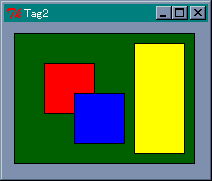 4 つの矩形を描画
各矩形の ID は描画した順番に 緑 (1), 赤 (2), 青 (3), 黄 (4) となります。この状態で、図形の探索を実行します。
$canvas->find('all')
=> 1, 2, 3, 4
$canvas->find('withtag', 'rect')
=> 2, 3, 4
$canvas->find('above', 1 )
=> 2
$canvas->find('below', 4 )
=> 3
$canvas->find('enclosed', 30, 30, 100, 100 )
=> 2
$canvas->find('overlapping', 30, 30, 100, 100 )
=> 1, 2, 3
$canvas->find('closest', 0, 0 )
=> 1
all を実行すると、すべての図形、緑、赤、青、黄を返します。withtag でタグ rect を探すと、赤、青、黄を返します。above と below は、見た目の重なりではありません。Tk で管理している 重なり順 で判断することに注意してください。
重なり順は描画した順番、緑、赤、青、黄になります。above で緑の上にある図形を探すと赤を返します。これは見た目と同じですが、below で黄の下にある図形を探してみると青を返すのです。見た目で判断すると緑を返すように思われますが、重なり順で黄の下にある青を返すのです。ご注意くださいませ。なお、重なり順はメソッド raise と lower で変更することができます。
enclosed で領域 (30, 30, 100, 100) にある図形を探すと赤を返します。enclosed は指定した領域に図形が完全に含まれていないといけませんが、overlapping は一部でも指定した領域と重なっていればいいので、緑、赤、青が返されます。最後に closest で (0, 0) に一番近い図形を探しています。これは緑を返します。
このほかに、タグを設定するメソッド addtag と、タグを削除するメソッド dtag があります。
$canvas->addtag( tag, searchcommand, args, ... ); $canvas->dtag(IDorTAG, tag );
メソッド addtag は find と同じ searchcommand を指定して、条件に合った図形に tag を設定します。図形の ID がわかっている場合は、メソッド itemconfigure で タグをセットすることもできます。メソッド dtag は指定した図形から tag を削除します。
今度は簡単なゲームを作ってみましょう。簡単なアクションゲームならば Perl/Tk だけでも何とかなりそうなので、「モグラたたき」を作ることにしました。5 行 5 列の穴からモグラが出くるので、それをマウスでクリックしてください。私は絵心のないプログラマなのでモグラの代わりに楕円を使いますが、グラフィック表示するように改造するとゲームらしくなるでしょう。
ゲーム作成のポイントは、モグラの出し入れとモグラを叩く処理です。モグラを叩くことはマウスのクリックで行いますので、モグラ（楕円）に対してバインディングを設定すれば簡単です。
モグラの出し入れですが、ユーザーからの入力がなくてもゲームを進行させなくてはいけなので、単純なイベント駆動型アプリケーションでは「モグラたたき」を実現することはできません。このため、プログラム自身で何らかのきっかけを作ってやる必要があります。このような場合、役に立つメソッドが after です。after の機能を示します。
このように、after には単純な時間待ちを行うほかに、一定時間後に指定したコマンドを起動するタイマーの働きも持っています。たとえば、ゲームを進行させる関数を game としましょう。game を一定間隔で実行させる場合、game の最後で after を使って自分自身の起動を設定すればいいのです。具体的には次のようにプログラムします。
sub game {
# game の処理
.....
$top->after( 500, \&game );
}
これで 500 msec 後に game が実行されます。もっとも、厳密に 500 msec ごとに game が実行されるわけではありません。game の処理にも時間がかかりますし、Windows はマルチタスクで動作しているので、ほかのタスクの影響も受けるからです。まあ、モグラたたきのようなゲームの場合、厳密なリアルタイム処理は必要としないので、これで十分です。
game は一定間隔で時を刻むので、これを使ってモグラを管理します。モグラたたきの場合、モグラが隠れている状態から、モグラが出る、モグラを叩く、または叩き損ねてモグラが逃げる、そしてモグラが隠れている状態に戻ります。この場合、モグラが穴を移動するのではなく、各穴にモグラが一匹ずついて出たり隠れたりする、と考えた方が簡単です。つまり、モグラを中心に考えるのではなく、穴の状態を基準にプログラミングするのです。
モグラを出す場合は、モグラが隠れている穴の中からランダムで選べばいいでしょう。このあとの状態は、それぞれ持続時間が異なります。モグラが出ている時間を 3 秒、叩かれた状態を 1 秒間、逃げた状態を 2 秒間表示するとしましょう。この時間管理を game を使って行います。具体的には、穴の状態を無名のハッシュで表します。この中で、状態を表す変数 state と持続時間を表す変数 mogutime を定義します。
| 値 | 状態 |
|---|---|
| ０ | モグラが隠れている状態 |
| １ | モグラが出ている状態 |
| ２ | モグラを叩いた状態 (HIT! と表示する) |
| ３ | モグラが逃げた状態 (MISS と表示する) |
| ４ | 準備中 |
モグラの状態が変化するときは、state の値を書き換えると同時に mogutime の値をセットします。game は state が 0 以外の場合、mogutime の値を -1 していき、mogutime が 0 になったら (タイムアップ)、次の状態へ変化させます。たとえば、モグラを出すときは、state が 0 の穴からランダムに選び、state を 1 に書き換え、mogutime に 6 をセットします。game は 500 msec 間隔で実行されるので、これで約 3 秒間モグラを表示することになります。
state が 1 でタイムアップした場合は、モグラを叩き損ねた場合です。このときは、state を 3 に書き換えて mogutime を 4 にセットします。モグラを叩いた場合は、state を 2 に書き換え、mogutime を 2 にセットします。この処理はモグラにバインディングされたイベントハンドラで行い、マウスの左クリックで実行されます。この処理は game の実行とは関係なく発生します。つまり、モグラを叩く処理と game の処理は非同期で行われるのです。
一般に、非同期の処理をプログラミングすることはたいへん難しいのですが、GUI アプリケーションの場合、イベントが非同期で発生することは当たり前のことです。Perl/Tk ではイベントントハンドラをプログラムするだけで済みます。
state が 2 や 3 の状態でタイムアップしたら、state を 4 の状態（準備中）にします。これは同じ穴からモグラがすぐに出てこないようにするためです。この時間は 3 秒間とし、タイムアップしたら state を 0 に戻します。
それから、ゲームに変化をつけるためにレベルを導入します。最初はレベル 1 で、10 匹モグラを叩くたびにレベルアップします。1 匹叩くたびにレベルだけ得点が入ります。レベル 1 のときは 1 点しか入りませんが、レベルが 10 になると 1 匹叩くたびに 10 点入ります。そして、レベルアップするたびに、同時に出現するモグラの数を増やしましょう。10 匹叩き損ねたらゲームオーバーとします。
表示にはキャンバスウィジェットを使いますが、モグラを出すたびに楕円を描画していては無駄ですね。あらかじめ必要な図形を用意しておいて、穴を表す図形の背後に隠しておくことにします。
ほとんどのウィンドウシステムでは、上にある窓が下にある窓を覆い隠します。ウィジェットにも順番があり、Tk の場合はあとから作成したウィジェットが上になります。ウィジェットの重なり順を変更するコマンドが raise と lower です。
$widget1->raise( $widget2 ); $widget1->lower( $widget2 );
$widget2 が省略された場合、raise は $widget1 の重なり順をいちばん上にし、lower はいちばん下にします。$widget2 を指定した場合は、$widget2 に対して $widget1 を、raise では上に lower では下にします。
キャンバスウィジェットで作成する図形も同じです。あとから作成した図形が上となり、その順番をウィジェットのメソッド raise と lower で変更することができます。
$canvas->raise( $widget1, $widget2 ); $canvas->lower( $widget1, $widget2 );
$widget2 が省略されると、raise は $widget1 の重なり順をいちばん上にし、lower はいちばん下にします。このゲームでは、穴を矩形、モグラを楕円、HIT! と MISS をテキストで描画しておき、状態に合わせてその図形の優先順位を一番上にします。作成した図形の ID は無名のハッシュに格納しておきます
| hole | 穴の ID を格納する |
| mogu | モグラの ID を格納する |
| miss | MISS の ID を格納する |
| hit | HIT! の ID を格納する |
穴は 5 行 5 列なので、各配列は 2 次元配列としてアクセスします。といっても、Perl の場合は 1 次元配列しかありません。リファレンスを使って「配列の配列」を作り、擬似的に 2 次元配列を実現します。
リスト : グローバル変数の初期化
@mogu_house = ();
for( $x = 0; $x < 5; $x++ ){
$mogu_house[$x] = [];
for( $y = 0; $y < 5; $y++ ){
$mogu_house[$x][$y] = &init_mogura( $x, $y );
}
}
$buff1 = "Click Start Menu !!";
$hi_score = 0;
モグラが出入りする穴は配列 @mogu_house で表します。ここにモグラの状態やデータを格納した「無名のハッシュ」をセットします。無名のハッシュは関数 init_mogura で生成します。この関数でモグラに必要な図形を生成します。
モグラを作成したときは、バインディングを設定しなくてはいけません。これは次のように行います。
リスト : バインディングの設定
my $mogu = $canvas->create( 'oval', $x1, $y1, $x1 + 59, $y1 + 39,
-outline => 'darkgreen', -fill => 'blue',
-tags => 'mogura' );
$canvas->bind( $mogu, "<Button-1>" => [\&attack, $x, $y] );
これは初期化ルーチン init_mogura から抜き出したものです。作成したモグラにイベントハンドラをバインディングしています。イベントハンドラは attack ですが、モグラの位置 $x と $y を引数に指定しているので、それぞれのモグラにバインディングされる attack には、異なる位置が与えられることに注意してください。これでクリックされたモグラを特定することができるので、わざわざマウスの位置を求める必要はありません。
イベントハンドラ attack は次のようになります。
リスト : 命中処理
sub attack {
my ($id, $x, $y) = @_;
my $mogura = $mogu_house[$x][$y];
++$hit_count;
if( $hit_count and ($hit_count % 10 == 0) ){
$level++;
}
$score += $level;
$now_mogu--;
$mogura->{'state'} = 2;
$mogura->{'mogutime'} = 2;
$canvas->lower( $mogura->{'mogu'} );
$canvas->raise( $mogura->{'hit'} );
&print_label();
}
グローバル変数 $hit_count は叩いたモグラの数、グローバル変数 $now_mogu は穴から出ているモグラの総数を表します。これらの変数はレベル管理に使います。モグラを隠している状態では、クリックしてもイベントハンドラは起動されないので、状態を表す state をチェックする必要はありません。このへんは Perl/Tk が面倒を見てくれるので、プログラムは簡単になります。print_label はスコアを計算してラベルに表示します。
ゲームを進めるために一定間隔で実行される game は次のようになります。
リスト : ゲームの実行
sub game {
my ($x, $y);
for( $x = 0; $x < 5; $x++ ){
for( $y = 0; $y < 5; $y++ ){
my $mogura = $mogu_house[$x][$y];
if( $mogura->{'state'} != 0 ){
if( --$mogura->{'mogutime'} == 0 ){
if( &change_mogura( $mogura ) ){
&game_over();
return;
}
}
} else {
&gen_mogura( $mogura );
}
}
}
$top->update;
$top->after( 500, \&game );
}
game では state が 0 以外の穴について mogutime を -1 していき、タイムアップしたならばモグラのステートを変更するため change_mogura を呼び出します。change_mogura ではモグラの状態を変更します。もしも、ミスが 10 回に達したら 1 を返すので、ゲームの終了処理を game_over で行います。このあとは return で game を抜けます。
after の前のメソッド update は、待ちイベントを実行するコマンドです。モグラの出し入れやスコア表示など、Perl/Tk では簡単に行っているように見えますが、そのたびに画面更新のイベントが発生します。これらの処理は Perl/Tk が面倒をみてくれるのですが、プログラムの実行に時間がかかると、その処理を行うことができません。このため、すべての待ちイベントを処理する update を実行して、画面の状態を確実に更新するようにしています。
あとは特に難しい処理を行っていないので、ここまでの説明でソースファイルは読むことができるはずです。ゲームは単純なのですぐに飽きるでしょう。いろいろと改造してみてください。
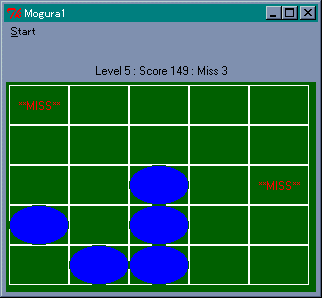 モグラたたきゲームの画面